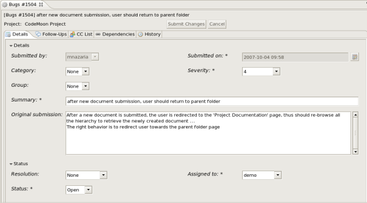
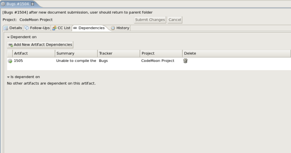

Le détail d'un artéfact est composé de plusieurs onglets. Chaque onglet correspond à une section dans l'interface de CodeX.
Pour valider les modifications, cliquez sur le bouton "Soumettre les changements". Dans le cas d'un nouvel artéfact, le bouton pour le soumettre est "Créer un artéfact". Pour annuler les changements et revenir aux valeurs de l'artéfact, cliquez sur le bouton "Annuler".
Aucune modification ne sera réellement enregistrée avant d'avoir validé en pressant le bouton "Soumettre". L'appui sur le bouton envoie les modifications au serveur CodeX, comme vous le feriez dans votre navigateur web.
|  |
Dans cet onglet sont affichés tous les champs de l'artéfact. Ils sont regroupés en groupe de champs (fieldset) que vous pouvez plier et déplier.
 |
Dans cet onglet, vous trouverez les commentaires et les fichiers attachés de l'artéfact.
Le champ "Détails" de l'artéfact est ré-affiché dans cet onglet pour mémoire.
Vous pouvez ensuite écrire un nouveau commentaire.
Les commentaires existants sont affichés juste en dessous.
On trouve ensuite la section des fichiers attachés.
Pour ajouter un nouveau fichier attaché, cliquez sur le bouton
"Ajouter un fichier attaché", et sélectionnez le fichier
sur votre disque.
La liste des fichiers attachés de l'artéfact sont affichés
en dessous. Pour télécharger un fichier, double-cliquez sur
le nom du fichier. Une fenêtre vous demandera alors
l'emplacement pour sauvegarder le fichier.
Pour supprimer un fichier attaché, cliquez sur l'icone de la poubelle
 (le fichier ne sera pas réellement supprimé tant que vous ne soumettrez pas les modifications).
(le fichier ne sera pas réellement supprimé tant que vous ne soumettrez pas les modifications).
 |
Dans cet onglet, vous pouvez visualiser la liste des CC de l'artéfact, et en ajouter de nouveaux.
Pour ajouter une CC, pressez le bouton "Ajouter une nouvelle adresse en CC", puis remplissez les champs.
Pour supprimer une CC existante, pressez l'icone de la poubelle
 (la CC ne sera pas supprimée tant que vous ne validerez pas les modifications).
(la CC ne sera pas supprimée tant que vous ne validerez pas les modifications).
|  |
Dans cet onglet, vous pouvez visualiser les dépendances entre artéfacts.
Pour créer une nouvelle dépendance avec l'artéfact courant, cliquez sur le bouton "Ajouter une dépendance", et rentrez un ou plusieurs identifiants d'artéfacts (séparés par une virgule) et cliquez sur OK. Les dépendances entre artéfacts apparaissent dans la table juste dessous, avec leur description, l'outil de suivi et le projet auxquels ils appartiennent.
Pour supprimer une dépendance, il vous suffit de cliquer
sur la poubelle
 à droite de la description de l'artéfact (la dépendance ne sera pas supprimée tant que vous ne validerez pas les modifications).
à droite de la description de l'artéfact (la dépendance ne sera pas supprimée tant que vous ne validerez pas les modifications).
La section des dépendances vous montre les dépendances dans les deux sens : vous voyez la liste des artéfacts dont l'artéfact courant dépend, ainsi que la liste des artéfacts qui dépendent de l'artéfact courant.
 |
Le dernier onglet vous montre l'historique de l'artéfact. L'historique de l'artéfact garde la trace de toute modification d'un champ de l'artéfact.
L'historique de l'artéfact vous affiche le nom du champ modifié, l'ancienne et la nouvelle valeur de ce champ, le nom de l'utilisateur qui a effectué la modification, ainsi que l'heure de la modification.
Ces données ne sont pas éditables.